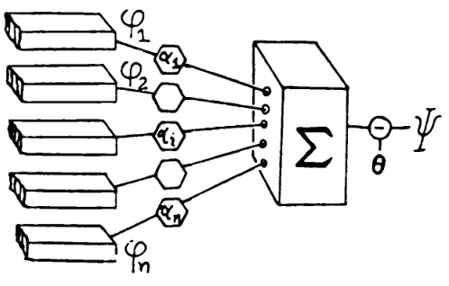
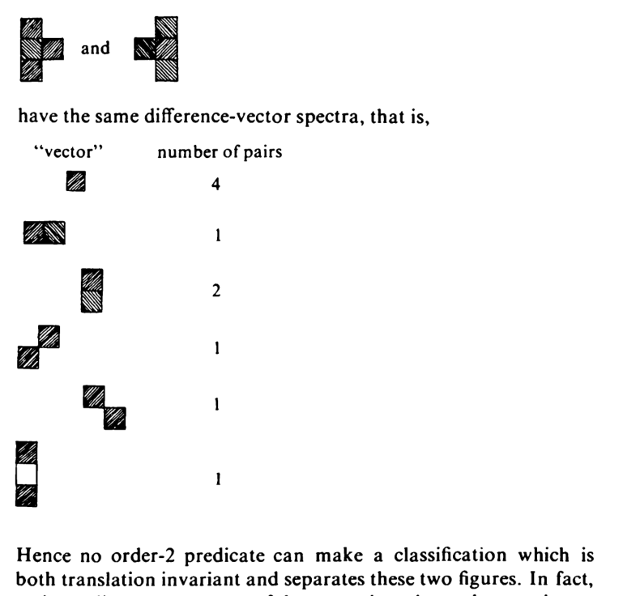
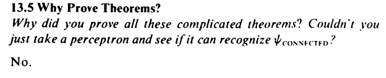
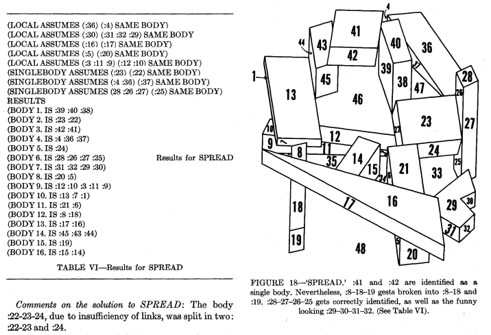

It would seem that Perceptrons has much the same role as The Necronomicon – that is, often cited but never read.
Marvin Minsky, 1994. Quoted in (Berkeley 1997)
During my early forays into AI, perhaps ten years ago, I heard rumors of how in the 1960s, there was a bitter controversy between the symbolic AI and the neural network AI schools. Furthermore, it was said that a certain book, Perceptions, was the center of the controversy – a deadly weapon that killed neural networks – until their resurgence in the 1980s.1 What, then, is in the mythical book? Recently, I have returned to this alleged episode, and in my research into the bottom of the perceptron controversy, I ended up actually reading the book. Now that I have done so, I proclaim:
1 The story would continue, with the vain dream of Japanese Fifth Generation Project and expert systems, both of which would never come to anything… And that was where the story ended! Deep learning? In 2013, neural nets were only a mirage. Sure, there might have been reports of early success, but it was not rising above the periodic tide of news stories of yet another miracle cancer drug that would never amount to anything, with the same feeling of “Once more unto the breach, my friends…”
You, too, can read the Necronomicon.
In one sentence, the mathematical portion of Perceptrons is a theory of two-layered perceptrons, mostly by methods typical of discrete mathematics and computational complexity theory, and no empirical results. One should forget about the modern theory and practice of neural networks, read the book in the same frame of mind as one would read a textbook on Turing machines, stack machines, Post tag systems, and other various theoretical objects in computational complexity theory. Indeed, this book is written in the same spirit and style as (Minsky 1967) and (Sipser 2006).
Perceptron representation occupies chapters 0–10, and learning is only studied in chapters 11 and 12. The book also contained a chapter 13, but it contains mostly interpretations and brief “lessons” that they wanted the readers to take away from the exact mathematical results. They added some handwritten corrections and updates for a 1972 printing run.
During the 1980s rise of connectionism, Minsky and Papert came out with a new edition in 1988. This is the same as the 1972 printing, except that they added a prologue and an epilogue, where they expounded at length the intended lesson of the book, as they felt that people have failed to learn it, and history was repeating itself.
For those interpretations, see The Perceptron Controversy.
Setup
Let \(R\) be a finite set, where “R” can be read as “region” or “rectangle”.
Definition 1 (Perceptron) A perceptron is a binary function of type \(\{0, 1\}^R \to \{0, 1\}\), defined by a weight vector \(w\) and a threshold number \(b\):
\[ \Phi(x) := \theta(w^T x + b) \]
where \(\theta(t) := 1_{t \geq 0}\) is the 0-1 step function.
Definition 2 (perceptron machine) A perceptron machine with \(k\) hidden neurons is a function of type \(\{0, 1\}^R \to \{0, 1\}\), defined by
\[ \Phi(x) := \psi_{k+1}(\psi_1(x), \psi_2(x), \dots , \psi_k(x)) \]
where \(\psi_1, \dots, \psi_k\) are (hidden) perceptrons in the hidden layer, and \(\psi_{k+1}\) is the single output perceptron.
Definition 3 (perceptron orders) The order of a hidden perceptron is the number of nonzero weights.
The order of a perceptron machine is the maximum order of its hidden perceptrons.
The order of a boolean function is the minimum order necessary for a perceptron machine that implements it.
For example, the constant-0 and constant-1 boolean functions are both of order 0.
A key focus of the perceptron controversy is the concept of being “conjunctively local”.
Definition 4 (conjunctively local) A family of boolean functions is conjunctively local iff their orders are upper bounded.
Over finite sets
While their definition allows perceptron machines of any real-valued weights and biases, they immediately performed a computational reduction to the special case of mask perceptron machines. Most of the book considers the problem of classifying subsets of families of planar square grids, such as \(\{1, 2, 3\} \times \{1, 2, 3, 4\}\). A subset is inputted to the perceptron machine by setting inputs in the subset to \(1\), and the rest to \(0\). Consequently, it is natural to consider this special case of perceptron machines.
While their definition allows perceptron machines of any real-valued weights and biases, they immediately performed a computational reduction to the special case of the mask perceptron machine. Most of the book considers the problem of classifying subsets of families of planar square grids, such as \(\{1, 2, 3\} \times \{1, 2, 3, 4\}\). A subset is input to the perceptron machine by setting inputs in the subset to \(1\), and the rest to \(0\). Consequently, it is natural to consider this special case of perceptron machines.
Definition 5 (mask perceptron machine) A mask for \(A\subset R\) is a function of type \(\{0, 1\}^R \to \mathbb{R}\), such that \(\psi(x) = 1\) if \(x_i = 1\) for all \(i \in A\), and otherwise \(\psi(x) = 0\).
A mask perceptron machine is a perceptron machine where each hidden perceptron is a mask, and the threshold of the output perceptron is zero. In other words, it is of form
\[ \Phi(x) = \theta\left(\sum_{i=1}^k a_i \psi_{A_i}(x)\right) \]
where each \(\psi_{A_i}\) is a mask, each \(a_i\in \mathbb{R}\), and \(k\) is the number of hidden perceptrons.

Theorem 1 (Theorem 1.5.1) Restricting to mask perceptron machines does not change perceptron orders. That is, any boolean function implemented by a perceptron machine of order \(k\) can be implemented by a mask perceptron machine of order at most \(k\).
Proof. Take one such perceptron machine. The threshold of the output perceptron can be removed by adding a hidden perceptron that always outputs \(1\) – in other words, \(\psi_\emptyset\), the mask of the empty set. Now it remains to decompose each hidden perceptron into masks with the same order, or less.
Let \(\psi\) be a hidden perceptron with nonzero weights on the input points \(x_{i_1}, \dots, x_{i_k}\); then, its output is determined by the values of \(x_{i_1}, \dots, x_{i_k}\). Therefore, we can partition the binary set \(\{0, 1\}^{i_1, \dots, i_k}\) into two subsets \(A_0, A_1\), such that for any input \(x\in\{0, 1\}^R\), we have \(\psi(x) = 1\) iff \((x_{i_1}, \dots, x_{i_k}) \in A_1\).
In other words, we only need to look at the binary values \(x_{i_1}, \dots, x_{i_k}\) to determine the binary output \(\psi(x)\).
Therefore, we can replace \(\psi\) with a boolean formula on \(x_{i_1}, \dots, x_{i_k}\), then expand it to obtain up to \(2^k\) masks, each of order at most \(k\).
For example, suppose \(\psi\) has nonzero weights on \(x_1, x_2\), and is 1 on all odd-sized subsets, then we can write it as a boolean formula:
\[ \left(x_1 \wedge \neg x_2\right) \vee\left(\neg x_1 \wedge x_2\right) = x_1\left(1-x_2\right)+\left(1-x_1\right) x_2 = x_1 + x_2 - 2 x_1 x_2 \]
The next tool they used is symmetry, formulated in the language of finite group actions.
Let \(S_R\) be the permutation group on the elements of \(R\), and \(G\) be a subgroup of \(S_R\). We say that a boolean function \(\psi\) is \(G\)-invariant iff \(\psi \circ g=\psi\) for any \(g \in G\). That is, for any \(X \subset R\), we have \(\psi(X) = \psi(g(X))\). For example, the parity function is \(S_R\)-invariant, since any permutation of the set preserves the size, and thus the parity, of any of its subsets.
Theorem 2 (group invariance theorem) If a boolean function is \(G\)-invariant, where \(G\) is a finite group, then any perceptron machine computing it can be converted to a perceptron machine \(\theta(\sum_i a_i \psi_i)\), such that if \(\psi_i = \psi_j \circ g\) for some \(g \in G\), then \(a_i = a_j\).
Proof. Take the group-action average: any mask \(\psi\) is equal to \(\frac{1}{|G|} \sum_{g\in G} \psi\circ g\).
Once the groundwork was laid, they proceeded to prove a wide variety of theorems on the order of particular boolean functions.
Consider the parity function. It is \(1\) iff exactly an odd number of inputs are \(1\) and the rest are \(0\).
Theorem 3 (Theorem 3.1) The parity function has order \(|R|\).
Proof. Since the parity function is \(S_R\)-invariant, if it is implemented by a perceptron machine of order \(k\), it is implemented by some mask perceptron machine \(\theta(\sum_{A_i \subset R} a_{A_i} \psi_{A_i})\), where each mask is of size \(\leq k\), and each weight \(a_{A_i}\) depends only on the size of \(A_i\). Let \(b_{|A_i|} = a_{A_i}\) be those coefficients. It remains to show \(b_{|R|} \neq 0\).
For each \(X \subset R\), we have by explicit computation
\[ \theta\left(\sum_{A_i \subset R} a_{A_i} \psi_{A_i}\right) = 1\left[f(|X|) \geq 0\right] \]
where \(f(t) := \sum_{i=0}^{|R|}b_i \binom{t}{i}\) is a polynomial in \(t\). Since this perceptron machine implements the parity function, as \(t\) increases from \(0\) to \(|R|\), the function \(f(t) + \epsilon\) must intersect the \(x\)-axis at least \(|R|\) times for some real value \(\epsilon\). Since \(f\) is a polynomial, it must have at least order \(|R|\), thus \(b_{|R|} \neq 0\).
Theorem 4 (Theorem 3.2, one-in-a-box) Let \(A_1, A_2, \dots, A_m\) be disjoint subsets of \(R\), each of size \(4 m^2\), and define the predicate \(\psi(X) = \forall i, \left|X \cap A_i\right|>0\); that is, there is at least one point of \(X\) in each \(A_i\). The order of \(\psi\) is \(\geq m\).
Proof. Let the order of \(\psi\) be \(k\).
The predicate \(\psi\) is invariant with respect to the group \(S_{A_1} \times \cdots \times S_{A_m}\), so by the same construction as the proof of Theorem 2, there exists a polynomial \(P(t_1, \dots, t_m)\), where \(P\) has order \(k\), and
\[ \forall t_1, \dots , t_m \in \{0, 1, \dots , 4m^2\}, P(t_1, \dots , t_m) < 0 \iff t_1 = 0 \vee \cdots \vee t_m = 0 \]
Now define \(Q(t) := P((t-1)^2, (t-3)^2, \dots, (t-2m+1)^2)\). By the above equation, \(Q < 0\) at \(t=1, 3, \dots, 2m - 1\) and \(Q \geq 0\) at \(t = 0, 2, \dots, 2m\). Thus, \(Q\) has order \(\geq 2m\). Thus, \(2k \geq 2m\).
Theorem 5 (Theorem 4.0) There exist predicates \(\psi_1\) and \(\psi_2\) of order 1 such that \(\psi_1 \wedge \psi_2\) and \(\psi_1 \vee \psi_2\) are not of finite order. Specifically, if we partition \(R\) into three equal subsets \(A, B, C\), then the boolean function does not have bounded order:
\[ (|X \cap A| > |X \cap C|) \wedge (|X \cap B| > |X \cap C|) \]
even though both \(|X \cap A| > |X \cap C|\) and \(|X \cap B| > |X \cap C|\) are of order \(1\).
Proof. \(|X \cap A| > |X \cap C|\) is computed by the order-\(1\) perceptron machine \(\theta\left(\sum_{i\in A} x_i - \sum_{i \in C}x_i\right)\), and similarly for the other one.
To show the composite boolean function is not of bounded order, suppose otherwise, then by the same argument as the previous proof, we can construct a sequence of polynomials \(P_1(a, b, c), P_2(a, b, c), P_3(a, b, c), \dots\), such that each \(P_n\) is the polynomial corresponding to the perceptron machine for the case where \(|A| = |B| = |C| = n\), and each of them has order at most \(M\), for some fixed \(M\).
Being the polynomial corresponding to the perceptron machine for the case where \(|A| = |B| = |C| = n\) means precisely that
\[ a > c \wedge b > c \implies P_n(a, b, c) \geq 0; \neg (a > c \wedge b > c) \implies P_n(a, b, c) < 0; \]
for all \(a, b, c \in \{0, 1, \dots, n\}\). This implies that each \(P_1, P_2, \dots \neq 0\). Now, divide each polynomial by the root-sum-square of its coefficients, so that if we interpret the coefficients of each \(P_n\) as a point in a high-dimensional space, the point falls on the unit sphere in that space. Since the unit sphere is compact, there exists a limit point, which we write as \(P(a, b, c)\).
By the limit construction, we have
\[ \forall a, b, c \in \mathbb{N}, \quad a > c \wedge b > c \implies P(a, b, c) \geq 0; \neg (a > c \wedge b > c) \implies P(a, b, c) \leq 0; \]
If we color the points \(\mathbb{N}^3\) with black for \(P < 0\) and white for \(P \geq 0\), then we can see the dusty outlines of a pyramid. We can construct a solid pyramid by zooming.
Let \(M'\) be the order of \(P\), then we can “zoom out” by taking the projective limit \(Q(a, b, c) := \lim_{t \to \infty} t^{-M'} P(ta, tb, tc)\). This \(Q\) is a homogeneous polynomial, and by continuity,
\[ \forall a, b, c \geq 0, \quad a > c \wedge b > c \implies P(a, b, c) \geq 0; a < c \vee b < c \implies P(a, b, c) \leq 0; \]
This implies that \(P\) is identically zero on the “creased curve” \(\{ a, b, c \geq 0, a = c \vee b = c\}\) in the projective plane, which is not an algebraic curve, therefore it is identically zero, contradiction.
Theorem 6 (Theorem 5.1) The connectedness function has order \(\Omega(|R|^{1/3})\).
Proof. If we have a mask perceptron machine that can solve the connectedness problem, then it can be repurposed2 to solve the one-in-a-box problem of the following kind:
2 Repurposing one machine to solve another problem is a common trick in computational complexity, called “reduction”. For perceptron machines, they called it “Theorem 5.4.1: The Collapsing Theorem”.

In the picture, the rectangle \(R\) has width \(4m^2\) and height \(2m+1\). We fill in all the odd-numbered rows, and use the machine to solve the one-in-a-box problem for the even-numbered rows. By Theorem 4, the machine has order \(\geq m = \Omega(|R|^{1/3})\).
In fact, it turns out that essentially the only locally conjunctive topological invariant is the Euler number.
Theorem 7 (Theorem 5.8.1) The Euler number itself is \(E(X) = \sum_{i \in R} x_i - \sum_{i, j \in R} x_ix_j + \sum_{i, j, k, l \in R} x_ix_jx_kx_l\), where the \(i, j\in R\) ranges only over adjacent points, and \(i, j, k, l \in R\) ranges only over quadruples that form a square. Thus the Euler number itself has order \(4\).
Theorem 8 (Theorem 5.9) If \(\psi\) is a boolean function, and it depends only on the topology of the input figure, and its order is upper-bounded by some number \(k\) that does not grow even as \(R\) grows into a larger and larger rectangle, then \(\psi\) is of form \(f \circ E\), for some function \(f: \mathbb{N}\to 2\).
Over infinite spaces
Chapters 6–9 continue in the same style, but move to the case where the input space is made of one or two copies of the infinite line \(\mathbb{Z}\), or the infinite plane \(\mathbb{Z}^2\), and the predicate to recognize is still translation-invariant. In order to avoid blowing up the perceptron machine with infinities, they restricted to the case where the input figure is of finite size, meaning that \(\sum_i x_i\) is finite.
Chapter 6 develops the idea of “spectra” of images. For example, the following picture shows that if we were to design a perceptron machine using only masks of size up to 2, and translation-invariant weights, then it cannot possibly distinguish between the two tetris-like pieces, because both figures contain exactly 4 instances of single-square, 1 instance of two squares side by side, and so on.

Sections 6.1–6.5 of the chapter studies the same idea for masks of size up to 4. For example, Section 6.4 shows that “\(X\) is the perimeter of a complete circle” is of order \(4\).
Section 6.6 claims that “recognizing figures in context” is generally not locally conjunctive, although they gave only two examples. Specifically, they showed that the predicate “\(X\) is a horizontal line across the rectangle” is order 2, the predicate “\(X\) contains one horizontal line across the plane” is not locally conjunctive. The same is true for the case with “a hollow square” instead of “a horizontal line”.
Chapter 7 uses the “stratification” construction to explicitly demonstrate that several binocular predicates are of finite order, but requires exponentially growing weights. It is essentially the same idea as Gödel numbering. A single illustrative example suffices to demonstrate the general point.
Example 1 Given a line \(\mathbb{Z}\), how to construct a perceptron machine that detects that input figure is symmetric?
Suppose we know for certain that the input figure has leftmost point \(m\) and rightmost point \(n\), then we can test for symmetry by computing the value of:
\[ f_{m, n}(x) := \sum_{i = 0}^{n-m} x_{m+i}(x_{n-i} - 1) \]
We have that \(f_{m, n}(x) = 0\) if the figure is symmetric, and \(f_{m, n}(x) \leq -1\) otherwise.
Now we define the entire perceptron machine by \(\sum_{m \leq n} M_{n - m} x_m x_n (f_{m, n}(x) - 1/2)\). If the sequence of \(M_0, M_1, \dots\) grows as \((d!)^2\) roughly 3, then the largest bracket \((m, n)\) would “veto” every smaller bracket contained within, and so the entire perceptron machine is effectively first testing for the smallest interval containing the figure, before testing the symmetry within that interval.
3 Expanding term by term, we have \(|f_{m, n}(x) - 1/2| \leq 2(n-m) + \frac{1}{2}\). Therefore, in order for \(M_d\) to “veto” every other bracket within, we need
\[ M_d \frac 12 > \sum_{d' = 1}^{d-1} \left(M_{d'}(\frac 12 + 2d')(d-d' + 1)\right) \]
Here \(d\) should be read as “distance between two ends of a bracket”.
To bound the growth rate, we bound the recurrence relation \(M_d = \sum_{d' = 1}^{d-1} \left(M_{d'}(4d' + 1)(d-d' + 1)\right)\). The sum on the right is bounded by
\[ \sum_{d' = 1}^{d-1} \left(M_{d'}(4d' + 1)(d-d' + 1)\right) \in \Theta{\left[ \sum_{d' = 1}^{d-1} \left(M_{d'}d'\right), d^2\sum_{d' = 1}^{d-1} \left(M_{d'}\right)\right]} \]
The lower bound implies \(M_d = \Omega((d!)^2 \times d^{-1})\) and the upper bound implies \(M_d = O((d!)^2 \times (d+1)^2)\).
They made similar constructions for perceptron machines that decide whether two infinite lines or planes are translates of each other, whether two planes are translation and approximate dilations of each other, and whether a line or a plane is the translation of a fixed figure.
Chapter 8 studies diameter-limited perceptron machines, meaning that not only are the hidden perceptrons assumed to be masks of bounded size, those masks are assumed to be contained in a circle of radius \(M\) for some finite \(M\). It is intended to be a formalization of the intuition that the perceptron machines should model a real pair of eyes scanning a plane, and each retina is a circular disk with finite radius. No results in chapter 8 were used further in the book, and they resemble the case of finite-order perceptron machines, so we do not discuss the results in detail.
Chapter 9 shows that the connectedness problem is easy to solve using small serial programs, a contrast to the case of perceptron machines. The overarching lesson is that connectedness is an “inherently serial” decision problem. The whole chapter is beautiful computational complexity theory, in the same style of solving fun mathematical puzzles, similar to (Minsky 1967).
They designed a robot (a finite state machine) that moves around the plane, and can solve the connectedness problem, with a memory size of just two. Namely, it only needs to store up to two locations \((x, y), (x', y')\) in its memory during its operation, and it eventually halts in one of three states “empty”, “connected”, and “disconnected”. Notice that a robot with no memory can still remember a finite number of states. It is simply that those memory slots are its finite states, which do not scale with the size of the problem. The little robot with a “memory size of two” really has a memory size of \(2 \log_2|R|\) bits, because it can remember two coordinates from the square \(R\), no matter how large the square grows.
They then described a few other more exotic computational models, such as a “pebble machine”, meaning a robot that has no memory, but provided with a single pebble. It can drop the pebble anywhere, and it can pick it up again. One can think of this as an intermediate level between pure finite state machines, which cannot write at all, and a Turing machine, which can write as much as it wants. They left as an exercise for the reader the task of translating the previous robot with two memory slots to this robot with one pebble. They conjectured that a finite state machine (a robot with no pebbles) would be unable to solve the task, but they could not prove it. I did a brief literature search and it seemed to be still unsolved.
Learning theory
They claimed that Chapter 10 is part of the learning theory. However, it does not actually involve learning. Whereas in the construction Example 1, we saw coefficients growing exponentially on an infinite plane, chapter 10 proves similar results on a finite plane.
Example 2 (Theorem 10.1) Suppose we have a perceptron machine that tests for parity; then, by Theorem 3, it must have order \(|R|\). As in the construction given in the proof, we use the group invariance theorem to obtain a group-symmetric machine with the form \(\theta(\sum_{i=0}^{|R|}\binom{|X|}{i} b_i)\), where \(b_0, b_1, \dots, b_{|R|}\) are real numbers. Then, assuming the machine is “reliable”, we can prove that \((-1)^{M} b_{M+1} \geq 2^{M}\) for any \(M \in \{0, 1, \dots, |R|-1\}\).
Since the group-symmetric construction can only average out the most extreme values, this implies that, before the group-symmetric construction, our perceptron machine had even more extreme coefficients.
A “reliable” machine is a support vector machine with margin \(\geq 1/2\). That is, it is a machine such that \[ \sum_{i=0}^{|R|}\binom{|X|}{i} b_i \begin{cases} \geq 1 & \text{ if $|X|$ is odd} \leq 0 & \text{ if $|X|$ is even} \end{cases} \]
Proof. Define \(A_n = \sum_{i=0}^n \binom{n}{i}b_i\). Since the machine is reliable, we have that \((-1)^{n}(A_{n+1} - A_n) \geq 1\) for each \(n = 0, 1, \dots, |R|-1\). Simplifying the binomial coefficients, we have \(A_{n+1} - A_n = \sum_i \binom{n}{i} b_{i+1}\). Note that we use the convenient convention that \(\binom{x}{y} = 0\) if \(x < y\).
Now fix any \(M \in \{0, 1, \dots, |R|-1\}\), and evaluate the following inequality:
\[ 2^{M} = \sum_n \binom{M}{n} \cdot 1 \leq \sum_n \binom{M}{n} (-1)^{n}(A_{n+1} - A_n) \]
By manipulating the binomial coefficients, the right side simplifies to \((-1)^M b_{M+1}\).
Sections 10.2 and 10.3 construct two pathological examples. By restricting the shapes of hidden perceptron masks, they proved that certain predicates required superexponential weights. Section 10.4 purports to extend the group invariance theorem to the infinite case.4 None of these are used elsewhere in the book. They are virtuoso performances. However, they interpreted this as a serious problem:
4 They purported to show in Theorem 10.4.1 that, if the weights are bounded, then the group invariance theorem applies again, but the proof is false, with a counterexample being \(\sum_{n \in \mathbb{Z}}e^{-n^2}x_n - e^{-n^4}x_nx_{n+1}\). The theorem might still be correct with another proof, but I cannot find one.
A proof, in Chapter 10, that coefficients can grow much faster than exponentially with \(|R|\) has serious consequences both practically and conceptually: the use of more memory capacity to store the coefficients than to list all the figures strains the idea that the machine is making some kind of abstraction
In Chapter 11, they finally began discussing perceptron learning, which is of a very restrictive form.
Definition 6 (Perceptron learning) To train a perceptron machine is to fix its hidden perceptrons, and adjust the weights and threshold of only the single output perceptron by the perceptron learning rule. For this chapter, it is cleaner to change the convention so that each perceptron outputs \(-1, +1\) instead of \(0, 1\).
Since only the output perceptron is adapted, it suffices to discuss the case where there are no hidden perceptrons, and we only need to adapt the weights of a single perceptron. That is, we have a dataset \(D\), and we sample some \((x, y) \in D\), and verify that \(y = \theta(\braket{w, x})\).
If this is true for all \((x, y) \in D\), then the perceptron learning has converged. Otherwise, we update \(w\) using \(w \leftarrow w + \alpha y x\), where \(\alpha > 0\) is the learning rate.
Definition 7 (Perceptron learning theorem) Let \(D\) be a dataset with radius \(R = \max_{(x, y) \in D} \|x\|\). If there exists some unit \(w^*\) such that \(\gamma = \min_{(x, y) \in D} y\braket{w^*, x}\), then the perceptron learning algorithm converges after making at most \((R/\gamma)^2\) updates.
Proof. By linearity of the learning rule, we can deal only with the case where \(\alpha = 1\).
By multiplying each \(x\) with its \(y\), we can deal only with the case where all \(y = +1\).
By rotating and scaling the space, we can deal only with the case where \(w^* = (1, 0, \dots, 0)\), and \(\gamma = 1\).
Now, each weight update increases the first coordinate of \(w\) by at least \(1\), so after \(n\) updates, \(\|w\| \geq n\). However, each weight update of \(w \leftarrow w + x\) uses a vector \(x\) that is pointing in a direction perpendicular to \(w\), or worse, pointing against \(w\). Therefore, by Pythagorean theorem, \(\|w\|^2\) increases by at most \(\|x\|^2 \leq R^2\). So after \(n\) updates, \(\|w\|^2 \leq nR^2\).
Combining the two results, we have \(n \leq R^2\).
Modifying the proof slightly, and applying the conclusion of Example 2, we find that starting with the zero weight vector, it takes at least \(2^{|R|}/|R|\) steps to learn the parity function.
They then suggested that, since gradient descent is “just” a more efficient perceptron learning rule, it also cannot escape local optima. No “local learning rule” can escape local optima, unlike symbolic programs that are provably capable of finding global optima.
If the dataset is not linearly separable, then the perceptron weights will not converge. However, the perceptron cycling theorem shows that if the dataset is finite, then the perceptron weights will still be trapped within a large but finite disk, no matter how the dataset is sampled.
Chapter 12 is not very mathematical, and consists mainly of quick sketches5 of other algorithms for learning. Those included: lookup table, nearest neighbor, k-means, ISODATA, maximum likelihood, Bayes, naive Bayes, etc. Sections 12.6 and 12.7 study variations on a toy problem: given a subset of \(\{0, 1\}^n\), decide whether an \(n\)-bit word is in it or not. This had relevance to the time-space tradeoff, a perennial topic in computational complexity.
5In this chapter we will study a few of these to indicate points of contact with the perceptron and to reveal deep differences. … The chapter is written more in the spirit of inciting students to research than of offering solutions to problems.
Chapter 13
Chapter 13 is a summary of the “take-home lessons” for the readers. As the intended lessons were expounded in great length in the epilogue added in 1988, I would not analyze the chapter in detail.
They discussed “Gamba perceptrons”, which is just another name for two-layered perceptrons where the hidden layer consists of perceptrons, instead of merely masks. They made the infamous prediction that not only Gamba perceptrons but also arbitrary multilayer perceptrons would be a “sterile extension”.
Well, we have considered Gamba machines, which could be described as “two layers of perceptron.” We have not found (by thinking or by studying the literature) any other really interesting class of multilayered machine, at least none whose principles seem to have a significant relation to those of the perceptron. To see the force of this qualification it is worth pondering the fact, trivial in itself, that a universal computer could be built entirely out of linear threshold modules. This does not in any sense reduce the theory of computation and programming to the theory of perceptrons. Some philosophers might like to express the relevant general principle by saying that the computer is so much more than the sum of its parts that the computer scientist can afford to ignore the nature of the components and consider only their connectivity. More concretely, we would call the student’s attention to the following considerations:
Multilayer machines with loops clearly open all the questions of the general theory of automata.
A system with no loops but with an order restriction at each layer can compute only predicates of finite order.
On the other hand, if there is no restriction except for the absence of loops, the monster of vacuous generality once more raises its head.
The perceptron has shown itself worthy of study despite (and even because of!) its severe limitations. It has many features to attract attention: its linearity; its intriguing learning theorem; its clear paradigmatic simplicity as a kind of parallel computation. There is no reason to suppose that any of these virtues carry over to the many-layered version. Nevertheless, we consider it to be an important research problem to elucidate (or reject) our intuitive judgment that the extension is sterile.
In short, their objection to multilayer perceptrons is that they suffer from Turing completeness, making it hard to prove anything concrete about them, except the trivial claim that they are Turing complete.6 A single perceptron is just a linear classifier, so it is possible to study mathematically. Experimental evidence is no justification, because:
6Beware of the Turing tar-pit in which everything is possible but nothing of interest is easy.
13.5 Why Prove Theorems?
Why did you prove all these complicated theorems? Couldn’t you just take a perceptron and see if it can recognize \(\psi_{\text {CONNECTED}}\)?
No.

Since a perceptron-only architecture is not the right way, they illustrated what they believe to be the “right” way to do computer vision by describing in detail the scene analysis algorithm. In short, it starts by discovering edges, then performs some computational geometry on them to recover outlines of basic shapes, such as cubes, then fills in the faces, then fills in the bodies between the faces. The algorithm had to do something clever to deal with occlusions. In the end, a complete 3D scene populated with 3D objects is recovered.

They ended the book with a brief discussion of how they discovered the various results, as well as a list of people they thanked.